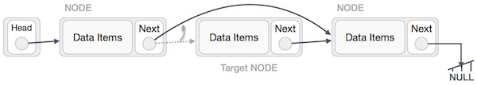
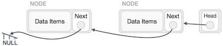

Danh sách liên kết (Linked List)
Một Danh sách liên kết (Linked List) là một dãy các cấu trúc dữ liệu được kết nối với nhau thông qua các liên kết (link). Hiểu một cách đơn giản thì Danh sách liên kết là một cấu trúc dữ liệu bao gồm một nhóm các nút (node) tạo thành một chuỗi. Mỗi nút gồm dữ liệu ở nút đó và tham chiếu đến nút kế tiếp trong chuỗi.
Danh sách liên kết là cấu trúc dữ liệu được sử dụng phổ biến thứ hai sau mảng. Dưới đây là các khái niệm cơ bản liên quan tới Danh sách liên kết:
- Link (liên kết) : Tmỗi link của một Danh sách liên kết có thể lưu giữ một dữ liệu được gọi là một phần tử.
- Next : Mỗi liên kết của một Danh sách liên kết chứa một link tới next link được gọi là Next.
- First : một Danh sách liên kết bao gồm các link kết nối tới first link được gọi là First.
Biểu diễn Danh sách liên kết (Linked List)
Danh sách liên kết có thể được biểu diễn như là một chuỗi các nút (node). Mỗi nút sẽ trỏ tới nút kế tiếp.

Dưới đây là một số điểm cần nhớ về Danh sách liên kết:
Danh sách liên kết chứa một phần tử link thì được gọi là First.
Mỗi link mang một trường dữ liệu và một trường link được gọi là Next
Mỗi link được liên kết với link kế tiếp bởi sử dụng link kế tiếp của nó.
Link cuối cùng mang một link là null để đánh dấu điểm cuối của danh sách
Các loại Danh sách liên kết (Linked List)
Các loại Danh sách liên kết (Linked List)
- Danh sách liên kết đơn (Simple Linked List) : chỉ duyệt các phần tử theo chiều về trước.
- Danh sách liên kết đôi (Doubly Linked List) : Các phần tử có thể được duyệt theo chiều về trước hoặc về sau.
- Danh sách liên kết vòng (Circular Linked List) : phần tử cuối cùng chứa link của phần tử đầu tiên như là next và phần tử đầu tiên có link tới phần tử cuối cùng như là prev.
Các hoạt động cơ bản trên Danh sách liên kết
Dưới đây là một số hoạt động cơ bản có thể được thực hiện bởi một danh sách liên kết:
- Hoạt động chèn : cthêm một phần tử vào đầu danh sách liên kết.
- Hoạt động xóa (phần tử đầu): : Xóa một phần tử tại đầu danh sách liên kết.
- Hiển thị : hiển thị toàn bộ danh sách.
- Hoạt động tìm kiếm : tìm kiếm phần tử bởi sử dụng khóa (key) đã cung cấp.
- Hoạt động xóa (bởi sử dụng khóa) : xóa một phần tử bởi sử dụng khóa (key) đã cung cấp.
Hoạt động chèn trong Danh sách liên kết
Việc thêm một nút mới vào trong danh sách liên kết không chỉ là một hoạt động thêm đơn giản như trong các cấu trúc dữ liệu khác (bởi vì chúng ta có dữ liệu và có link). Chúng ta sẽ tìm hiểu thông qua sơ đồ dưới đây. Đầu tiên, tạo một nút bởi sử dụng cùng cấu trúc và tìm vị trí để chèn nút này.

Giả sử chúng ta cần chèn một nút B vào giữa nút A (nút trái) và C (nút phải). Do đó: B.next trỏ tới C.
NewNode.next −> RightNode;Hình minh họa như sau:

Bây giờ, next của nút bên trái sẽ trở tới nút mới.
LeftNode.next −> NewNode;
Quá trình trên sẽ đặt nút mới vào giữa hai nút. Khi đó danh sách mới sẽ trông như sau:

Các bước tương tự sẽ được thực hiện nếu chèn nút vào đầu danh sách liên kết. Trong khi đặt một nút vào vị trí cuối của danh sách, thìnút thứ hai tính từ nút cuối cùng của danh sách sẽ trỏ tới nút mới và nút mới sẽ trỏ tới NULL.
Hoạt động xóa trong Danh sách liên kết
Hoạt động xóa trong Danh sách liên kết cũng phức tạp hơn trong cấu trúc dữ liệu khác. Đầu tiên chúng ta cần định vị nút cần xóa bởi sử dụng các giải thuật tìm kiếm

Bây giờ, nút bên trái (prev) của nút cần xóa nên trỏ tới nút kế tiếp (next) của nút cần xóa.
LeftNode.next −> TargetNode.next;

Quá trình này sẽ xóa link trỏ tới nút cần xóa. Bây giờ chúng ta sẽ xóa những gì mà nút cần xóa đang trỏ tới.
TargetNode.next −> NULL;
Nếu bạn cần sử dụng nút đã bị xóa này thì bạn có thể giữ chúng trong bộ nhớ, nếu không bạn có thể xóa hoàn toàn hẳn nó khỏi bộ nhớ.

Hoạt động đảo ngược trong Danh sách liên kết
Với hoạt động này, bạn cần phải cẩn thận. Chúng ta cần làm cho nút đầu (head) trỏ tới nút cuối cùng và đảo ngược toàn bộ danh sách liên kết

Đầu tiên, chúng ta duyệt tới phần cuối của danh sách. Nút này sẽ trỏ tới NULL. Bây giờ điều cần làm là làm cho nút cuối này trỏ tới nút phía trước của nó.

Chúng ta phải đảm bảo rằng nút cuối cùng này sẽ không bị thất lạc, do đó chúng ta sẽ sử dụng một số nút tạm (temp node – giống như các biến tạm trung gian để lưu giữ giá trị). Tiếp theo, chúng ta sẽ làm cho từng nút bên trái sẽ trỏ tới nút trái của chúng.
TargetNode.next −> NULL;
Sau đó, nút đầu tiên sau nút head sẽ trỏ tới NULL.

Chúng ta sẽ làm cho nút head trỏ tới nút đầu tiên mới bởi sử dụng các nút tạm.
